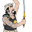
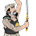

Requires
- Arts:

Enables
- Buildings:

- Units:


 

Basic Building Statistics (can be modified by difficulty level, arts, skills, traits and retainers)
- Cost: 850
Description
A sword is never safe, but the swordsman is dangerous.
The sword school allows the recruitment of katana samurai units. Use of the sword is a serious business, and the teaching and practice of sword fighting is equally serious. Students are expected to approach the subject with the deepest reverence. This is not unsurprising, given that a katana, or long sword, can easily sever a limb if handled carelessly! Samurai were the only people allowed to wear a pair of swords, the daisho (literally "long and short") of a katana and a wakizashi. Constant practice was required to use a sword properly, and many schools taught the art of kenjutsu. Iaijutsu was also taught, but this was the specialised skill of drawing and striking with a sword away from the battlefield, a useful thing for self-defence in dangerous times. The emphasis in all teaching, however, was on combat, not on sport or fun. Style mattered, but only as long as it aided the serious business of beating an opponent. Teaching also concentrated on the katana, although a few practitioners, such as the famous sword-saint, Miyamoto Musashi, favoured a two-sword style.